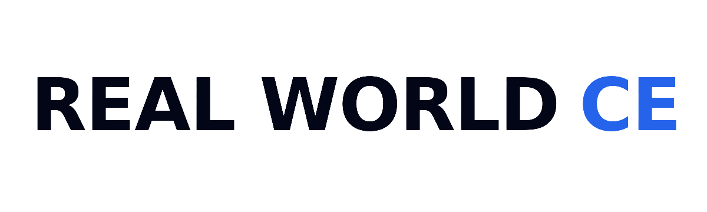
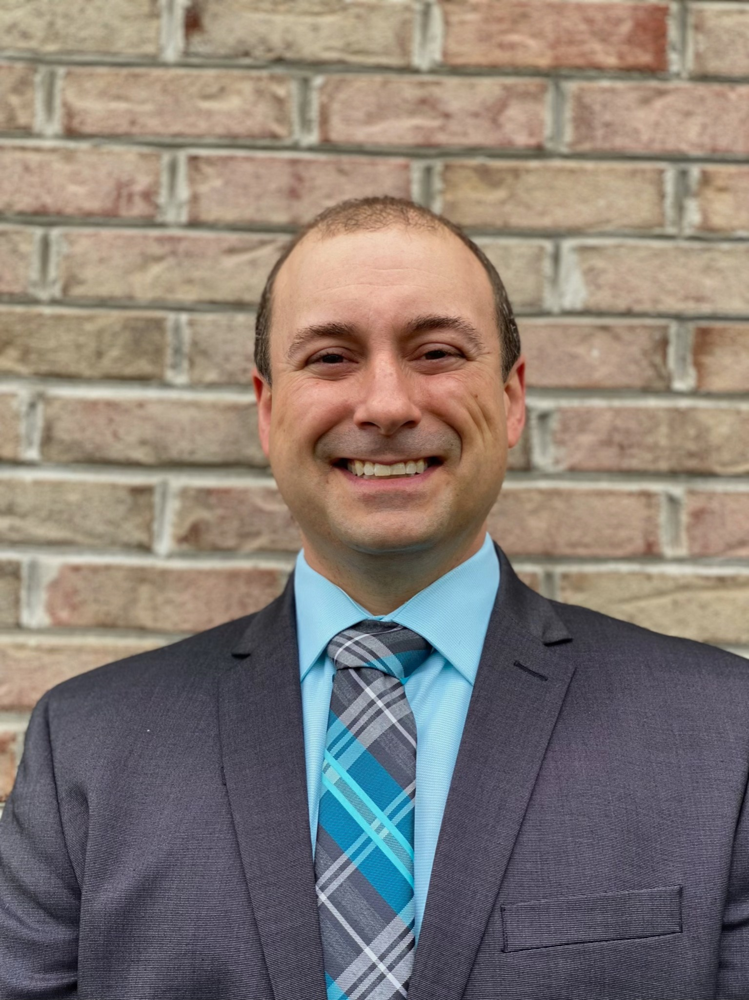

AI-generated patient scenarios based on authentic cases

REAL WORLD CE';">◉ LIVE ZOOM WEBINAR SERIES1.00 CME/CE Credits
Reducing Nonadherence and Rehospitalization Through Effective Tardive Dyskinesia Treatment
Tardive Dyskinesia in Managed Care
August 12, 2026•5:00 PM
Interactive, case-based education designed to help managed care clinicians identify, assess, and manage tardive dyskinesia using current evidence and guideline-based recommendations.
Register Now →Why Attend? Program Highlights
Interactive mock Pharmacy & Therapeutics (P&T) exercise
Evidence-based treatment and formulary decision-making
Live faculty discussion and Q&A
Featured Faculty
Leslie L. Citrome, MD, MPH
Clinical Professor Psychiatry & Behavioral Sciences
New York Medical College – School of Medicine
Valhalla, New York

Mark Garofoli, PharmD, MBA, BCGP, CPE, CTTS
Clinical Associate Professor & Clinical Pain/Addiction Pharmacist
West Virginia University & West Virginia University Medicine
West Virginia University Schools of Pharmacy/Medicine
Morgantown, West Virginia
Learning Objectives
1
Describe the physical, psychological, and socioeconomic impacts of TD symptoms along with the recommended monitoring guidelines for patients being treated with antipsychotics.
2
Describe the use of clinical tools for the assessment of TD across recommended patient populations.
3
Differentiate between guideline-recommended, FDA-approved first-line treatments and second-line options for TD based on the latest real-world evidence.
4
Construct population health management strategies that balance the economic impact of VMAT-2 inhibitors with long-term patient outcomes and reductions in total healthcare resource utilization.
Target Audience
This educational activity is intended for managed care pharmacists and other clinicians, and physicians, nurse practitioners, physician assistants and other clinicians who manage TD.
Accreditation
This activity has been planned and implemented in accordance with the accreditation requirements and policies of the Accreditation Council for Continuing Medical Education (ACCME) through the joint providership of PeerPoint Medical Education Institute and Real World CE. PeerPoint Medical Education Institute is accredited by the ACCME to provide continuing medical education for physicians.
PeerPoint Medical Education Institute designates the live format for this educational activity for a maximum of 1.00 AMA PRA Category 1 Credit™.
Physicians should only claim credit commensurate with the extent of their participation in the activity.
Commercial Support
Supported by an educational grant from Teva Pharmaceutical Industries Ltd.
realworldce.org
Reserve Your Spot TodayAugust 12, 2026 • 5:00 PM